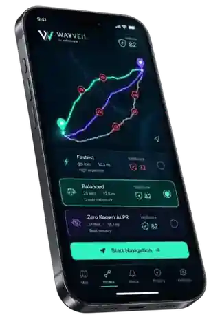
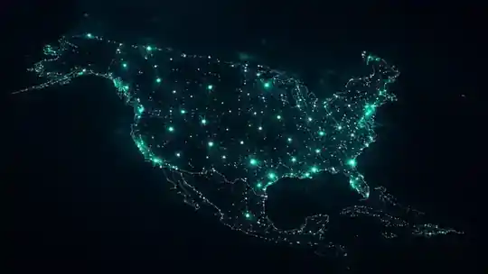

Privacy-firstPrivate navigation state stays local.
Privacy-first navigation
Know what’s watching.
Choose another way.
WayVeil helps you compare supported routes by known ALPR exposure, so you can decide how much time and privacy matter for each trip.
Already invited? Redeem your invite
Smart routesCompare time and known exposure.
Truthful coverageUnknown never becomes “zero.”
Built for driversNavigation first. Privacy made visible.

Regional data. Explicit limits.
Coverage that tells you what it knows.
WayVeil is being architected for North America through versioned regional packages. Accepted navigation coverage expands region by region, while ALPR-data quality remains a separate, clearly labeled signal.
Explore the coverage modelNorth AmericaCapable architecture
RegionalVersioned packages
Local-firstRoute computation
Known dataClearly labeled
Designed around the driver
Navigation fundamentals.
Privacy-aware choices.
Privacy First
By Design
Alpha access authorizes the build. It does not become your GPS, search, route, trip, or navigation identity.
Our privacy approachSmarter Routes.
More Control.
Fastest. Balanced. Zero Known ALPR when supported data can prove it — otherwise WayVeil says Best Available.
See how routing worksKnow What’s
Watching.
WayVeil surfaces supported known ALPR records and keeps uncertainty visible instead of pretending the dataset sees everything.
How known data worksTruth over theater
“0 known” is not “camera-free.”
Unknown cameras can exist. Data changes. WayVeil reports what the accepted supported snapshot knows and keeps that uncertainty visible.
Alpha access
Help shape private navigation before it scales.
The first cohort stays small and invite-only. Authorization is separate from geography; useful testing depends on an accepted regional package where you plan to drive.
Invite onlyOwner-approved closed-alpha access.
Check your areaCoarse regional availability, never signup GPS.
Private by defaultEntitlement never becomes navigation identity.
Parked-safe testingUpdates and reauthorization happen while parked.